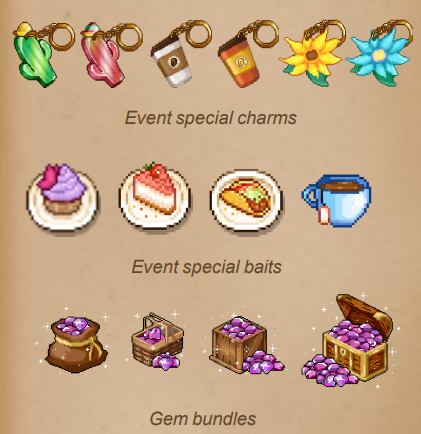
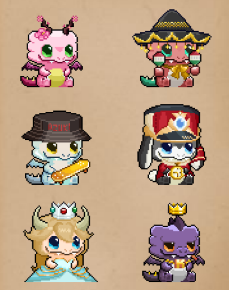
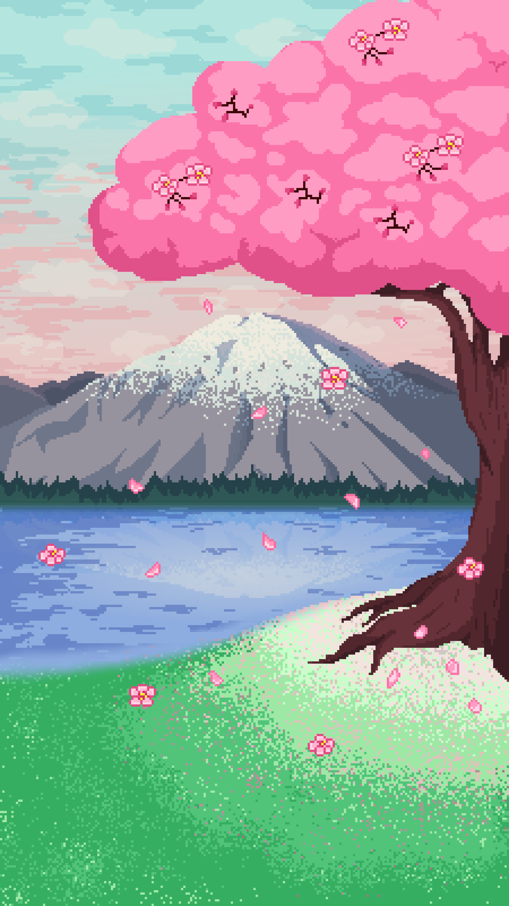

Komo Valley
Relaxing pixel-art pet collection game
Visual direction, pixel art, character variants, environment art, UI/UX design, GUI assets, event design, live-service content, animation, cosmetics, tutorial redesign, wireframing, prototyping, promotional assets, and content production.
Overview
Komo Valley was a relaxing pixel-art pet collection game for iOS and Android, developed and operated by Ethlas. Players could hatch and collect virtual pets known as Komos, customise them with accessories, interact with them, and send them on adventures across different locations.
The game combined pet collection, customisation, gacha mechanics, idle gameplay, and regularly updated live-service content within a nostalgic pixel-art visual style.
I joined the project as a full-time Game Artist while Komo Valley was already live. As the sole artist and designer on a three-person team, I maintained and expanded the visual direction while contributing to UI/UX, event design, content design, onboarding, and live-game updates.
We maintained a fast live-service production cycle, releasing new content approximately twice per week. Komo Valley was released publicly on the Apple App Store and Google Play Store before later being sunset and removed from both storefronts.
Project Design Goals
- Maintain and expand a cohesive retro pixel-art visual identity across characters, environments, UI, events, and promotional material.
- Produce collectible content at a pace suitable for a regularly updated live-service mobile game.
- Design themed events that encouraged players to return throughout the week.
- Improve mobile UI/UX, user flow, information hierarchy, and onboarding.
- Expand collection and customisation systems with new Komos, accessories, maps, and event content.
- Create reusable art workflows for a small team to produce high-volume content efficiently.
Game & Content Design
Features and content I designed or contributed to:
- Designed recurring weekly and biweekly live events, including seasonal, cultural, and pop-culture themes such as May the 4th and Cinco de Mayo.
- Designed and produced visual content for raffle and collection-based events.
- Developed new collectible Komo variants, producing approximately four new characters per week.
- Designed accessories, cosmetics, event rewards, and supporting visuals for the game's gacha-driven collection structure.
- Created themed maps with location-specific characters and bait, plus visuals for the virtual economy, including gems.
- Expanded the live game's content library while supporting approximately two content updates per week.

UI / UX Design
Alongside visual asset production, I contributed directly to the game's user experience:
- Designed and updated mobile UI layouts and menus, including screen layouts, button placement, and information hierarchy.
- Created approximately 70 GUI assets: icons, banners, buttons, panels, currencies, and reusable interface components.
- Updated existing user flows as new features and content were introduced.
- Created UI mockups, wireframes, interactive prototypes, concept pitches, and presentation materials in Figma.
- Redesigned the new-player tutorial and onboarding flow.
- Maintained visual consistency with the pixel-art aesthetic while balancing polish, usability, implementation constraints, and production speed.

Character & Pixel Art
The original base Komo design existed before I joined. I expanded this foundation with new variants, cosmetics, and themed characters for the live game.
- Created approximately 30 new Komo variants and themed characters for limited-time events.
- Designed accessories and wearable cosmetics, from concept through final pixel-art assets.
- Adapted existing character templates to support efficient live-content production.
- Created core animation sets for new characters: idle, walking, and sleeping.
Photoshop was primarily used for Komo production due to an established template workflow, while Aseprite was used extensively for pixel-art environments, GUI elements, accessories, and other game assets.

Environment & Animation
- Designed pixel-art environments, maps, props, decorative assets, and map-specific visual themes.
- Created assets supporting location-specific collectibles and bait.
- Produced animations for Komos, accessories, environments, and new content.
- Maintained visual consistency across existing and newly introduced locations.
Animations were integrated through the project's data-driven workflow, including JSON-based animation data.
Live-Service Production
Komo Valley operated as a live-service title throughout my time on the project. As the sole artist/designer, I produced a continuous stream of visual and design content while working alongside a Technical Lead and Engineer who were also supporting other projects.
- Produced updates approximately twice per week.
- Designed seasonal events, collectible characters, cosmetics, accessories, event banners, and promotional graphics.
- Updated UI for new features and events; created new maps and environments; and supported raffle, gacha, and collection content.
- Rapidly iterated on assets based on production needs.
Working in a small startup team required ownership across game design, UI/UX, character art, environment art, animation, marketing assets, and live-content production.
Visual Direction
As the only dedicated artist and designer, I maintained the visual consistency of Komo Valley during its live-service development.
- Maintained the established pixel-art style and established visual direction for new events and content.
- Ensured new Komos, maps, cosmetics, and UI matched the existing game.
- Designed event-specific visual identities and created both in-game and promotional artwork.
- Developed reusable visual assets and workflows suitable for frequent content releases.
This role balanced creative direction, production efficiency, player readability, mobile UX, and the technical constraints of an actively maintained game.